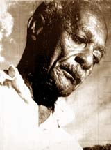

Цитаты местре Паштиньи (Mestre Pastinha)
Данный текст – это цитаты принадлежащие местре Паштинье, взятые из статьи «Это бой, это танец, это капоэйра» Роберту Фрейре, опубликованной в феврале 1967 года в „Revista Liberdade“. Перевод на английский язык Шайны МакХаг.
«Однажды я сложил вместе всё, что знаю о капоэйре, и вывел итог на этой табличке на двери моей Академии. В первой строчке получилось всего три слова: Ангола, капоэйра, мать. А ниже мысль: колдовство рабов, жаждущих свободы, изначально оно создавалось без какого-либо либо плана, в его основе не лежит никакой схемы, а его конец недосягаем даже для самого мудрого капоэйриста».
«Об истоках капоэйры существует такое количество историй, что никто уже не может понять, какая из них правда, а какая – вымысел. Одна из них – это версия о „танце зебр“, согласно которой, давно, века назад, племена Анголы ежегодно устраивали празднования в честь вступления девушек в «зрелость». Сначала их «посвящали» жрецы, и только после этого девушка имела право вступать в брак. В продолжение празднования, мужчины устраивали поединки, похожие на бои зебр – били друг друга, наносили удары головой. Победители получали право выбирать самую красивую женщину».
„Есть, по крайней мере, один факт, который никто не отрицает: капоэйре нас научили африканцы из Анголы. Очевидно, что тогда она отличалась от капоэйры наших дней. Мне говорят, что есть письменные доказательства, подтверждающие это. И я верю. Всё меняется. Но ту капоэйру, которую мы называем Капоэйра Ангола, той капоэйре, которой учился я, её я не позволил менять здесь, в своей академии. Этой капоэйре по меньшей мере 78 лет, и она проживет еще 100, потому что мои ученики держатся моей стороны. Они мне внемлют. Они знают, что им следует продолжать. И они знают, что это искусство также пригодно для самозащиты“.
«Когда мне было 10 лет (тогда я бы худым и слабым) парень посильнее меня начал издеваться надо мной. Мне достаточно было выйти на улицу, в магазин например, чтобы завязалась драка. Я всегда оставался побитым, и тайком плакал от стыда и разочарования».
«Как-то раз, один старый африканец увидел нашу драку из окна своего дома. „Подойди сюда, сынок“, сказал он мне, когда заметил, что я заплакал от злобы, после того, как меня в очередной раз побили. «Ты знаешь, ты не можешь побороть его, потому что он больше и старше тебя, но когда у тебя появится свободное время, приходи ко мне, я дам тебе несколько крайне полезных уроков». Так он мне и сказал. И я пришел».
Он всегда говорил: «Не лезь на рожон, парень, не показывай ему сразу всё, на что способен, пусть он осознает это постепенно. В последний раз, когда тот мальчишка набросился на меня, я познакомил его с единственным ударом, который мог сделать. После этого он перестал нападать на меня, даже стал моим другом, уважающим и восхищенным».
„Когда мне было 12 я поступил в морское училище, где начал преподавать капоэйру своим товарищам. Все называли меня 110.
Из флота я ушел, когда мне исполнилось 20 лет. Это было тяжелое время, т.к. я был молодым и нищим, возникали проблемы с полицией из-за уличных драк и прочего. Когда они пытались поймать меня, я вспоминал Mестре Бенедиту и начинал защищаться. Они знали, что я играю капоэйру, и поэтому пытались публично меня унизить. Так что были времена, когда мне приходилось бить полицейских, но только чтобы защитить свое тело и свою честь. В тот период, с 1910 по 1920-е годы игра была свободной, «всевозможной“.
«Я стал работать охранником в игорном доме. Но даже не смотря на то, что я занимался капоэйрой, я никогда не ходил без 12-тидимового ножа с двойным лезвием. Опытные капоэйристы в те дни всегда были вооружены. Надо было быть полным идиотом, чтобы появиться среди них без какого-либо оружия. Я видел много беспорядков, крови, но я не люблю рассказывать о драках, в которые был лично втянут. Как бы там ни было, я работал там лишь когда не мог заработать себе на жизнь своим искусством. Помимо игорного дома, я также чистил обувь, продавал газеты, был золотоискателем, помогал строить порт Сальвадора. Перебивался временными заработками, но всегда хотел жить за счет своего искусства, работы художника».
«В той роде были только Местре. Самым опытным из них был Аморзинью из городской охраны. Он пожал мне руку и предложил возглавить академию. Я отказался, но остальные мастера настаивали. Они говорили, что я больше всех подхожу для того, чтобы основать собственную академию и сохранить Capoeira Angola, пронести её сквозь годы».
„В Академии передавались все знания. Знание того, что это боевое искусство очень коварно и полно мудрости и понимания того, что необходимо быть спокойным. Капоэйра – это не атакующее единоборство, но выжидающее. Хороший капоэйрист легко может разрыдаться у ног атакующего. Он плачет, но его глаза и дух действуют. Капоэйристы не любят объятий и рукопожатий; никогда не стоит доверять учтивым жестам. Капоэйристы поворачивая за угол не открываются, защищая свое тело.
Вы всегда должны сделать два шага вправо или влево, чтобы рассмотреть врага. Не входите в дом, за дверью которого темный коридор, если вам нечем осветить мрак. Если вы идете по улице и замечаете, что кто-то за вами наблюдает, проигнорируйте это, затем быстро развернитесь и посмотрите на него снова. Если он все еще наблюдает за вами, чтож – он враг, и капоэйрист готовит себя к любому развитию событий“.
Невозможно научить и научится Капоэйре Ангола подавляя естественные проявления личности. Очень важно пользоваться преимуществом свободы и индивидуальности движений каждого человека. Никто не играет так, как я, но всё, чему я сам научился можно увидеть в игре моих студентов. Berimbao – это первобытный Mestre, он учит своим звуком, помогая нашим телам почувствовать вибрацию и ритм движений. Перкуссионный оркестр с беримбау – это не инновация, это основа. Хороший капоэйрист, помимо всего прочего, должен уметь играть на беримбау и петь. И играть капоэйру не пачкая своей одежды, не касаясь телом земли. Когда я играю, люди думают «старик напился», потому что движения мои кажутся небрежными, неустойчивыми, как будто я вот-вот упаду. Но пока еще ни у кого не получалось повалить меня на землю, и ни у кого не получится».
Источник: www.capoeira-connection.com